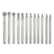

Come rummage around in our Toolshed
With Toolshed, you can rent any tool you need, anytime you want, for as long as you want. We keep them in perfect repair and make sure you know how to use them safely
Choose a Tool
Our shop
Get it in Two Days
See Reviews
Use it as Long as Needed
Join Now
Recent News
Everything Looks like a Nail
A hammer is a tool consisting of a weighted "head" fixed to a long handle. It is swung to deliver an impact to a small area of an object.
Posted 3/17/19.
How to Choose a Drill Bit
This can be, for example, to drive nails into wood. Hammers are used for a wide range of driving, shaping, and breaking applications.
Posted 3/20/19.
Pressure's On: How to Clean Your Driveway Well
The modern hammer head is typically made of steel which has been heat treated for hardness. The handle (also called a haft or helve) is typically made of wood or plastic.
Posted 3/23/19.
Introducing: Ask An Expert
The claw hammer has a "claw" to pull nails out of wood. It is commonly found in an inventory of household tools in North America.
Posted 3/26/19.
Spring's Here: What to Plant Based on your Region and Tastes
Other types of hammer vary in shape, size, and structure, depending on their purposes. Hammers used in many trades include sledgehammers, mallets, and ball-peen hammers.
Posted 3/29/19.
Caring for Batteries
Although most hammers are hand tools, powered hammers, such as steam hammers and trip hammers, are used to deliver forces beyond the capacity of the human arm. There are over 40 different types of hammers that have many different types of uses.
Posted 4/1/19 (no foolin').
New Dremel Bits
The addition of a handle gave the user better control and less accidents. The hammer became the number one tool.
Posted 4/4/19.
Garden Pergola from the Ground Up
The handle of the hammer helps in several ways. It keeps the user's hands away from the point of impact. It provides a broad area that is better-suited for gripping by the hand.
Posted 4/7/19.
Installing Floating Shelves
Some hammers are one-piece designs made mostly of a single material. A one-piece metallic hammer may optionally have its handle coated or wrapped in a resilient material such as rubber, for improved grip and to reduce user fatigue.
Posted 4/10/19.
How to Work with a Paint Sprayer
The hammer head may be surfaced with a variety of materials including brass, bronze, wood, plastic, rubber, or leather. Some hammers have interchangeable striking surfaces, which can be selected as needed or replaced when worn out.
Posted 4/13/19.
What to Look for in a General Contractor
The impact between steel hammer heads and the objects being hit can create sparks, which may ignite flammable or explosive gases. These are a hazard in some industries such as underground coal mining.
Posted 4/16/19.
Introducing Packs: Get All the Tools You Need for the Job in One Click
The handle of the hammer helps in several ways. It keeps the user's hands away from the point of impact.
Posted 4/19/19.